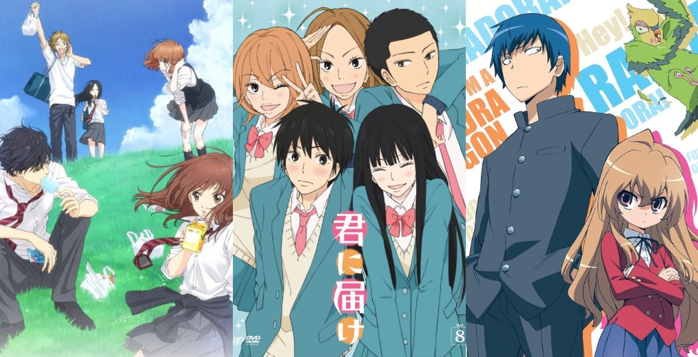

<!-- second screen -->
<div class="screen-three" style="display: ;">
    <div class="question-three">
    <h3 style="color: black;">What makes a Romance anime enjoyable to watch for you?</h3>
</h3>
      >
    </div>
    <button class="option-nine">Relatability</button>
    <button class="option-ten">Tropes</button>
    <button class="option-eleven">Humor</button>
    <button  class="option-twelve">Drama</button>
    <link rel="stylesheet" href="style.css">